Колонка: порада з безпечної відстані, або Що Арендт сказала б нашій перегаворці
Лонгрід на вісім хвилин про людей, які знають, як нам боротися, бо самі ніколи не пробували, і про жінку, яка знала, бо пробувала. Кава три в одному додається.
Єдина радіостанція про те, як класно бути українським ветераном. Новини тільки хороші: ми їх довго шукали.
Добрий вечір, країно. З вами Вайбвет FM, і в нас чудові новини: одному ветерану сьогодні сказали «дякую за службу» і нічого не попросили навзамін.
Редакція перевіряє кожну хорошу новину двічі, бо з першого разу ніхто не вірить.
Лонгрід на вісім хвилин про людей, які знають, як нам боротися, бо самі ніколи не пробували, і про жінку, яка знала, бо пробувала. Кава три в одному додається.
Відомство подякувало сестрі Емі Лі, яка ще з 2003 року вчить цілі покоління переживати внутрішню бурю з ідеальною поставою та бездоганним вокалом. У перегаворці на честь свята вимкнули світло, увімкнули фортепіано й мовчки дивились у вікно. Ніхто не постраждав, усі трохи постраждали, і це було прекрасно ☮️
Перший етап уже виконано: за одну ніч ветеран створив радіо, газету, два застосунки й офіс, який працює сам. Комісія з питань революції збереться, щойно хтось погодить рапорт про її створення. Старої культури ніхто не нищить: її перекладають ще чотирма мовами.
Одні гравці обурені, що в новій частині забагато рельсів і замало корованів. Інші збирають усі концовки. Ветеран пройшов гру за вечір і поставив п'ять зірок за одну деталь: жоден персонаж не вимагає з нього довідку.
Інцидент стався у вівторок близько одинадцятої. Очевидці кажуть, що чоловік подав заяву, отримав довідку й пішов, а черга ще кілька хвилин стояла мовчки. Мінвайбвет уже створив міжвідомчу комісію, яка з'ясує, як таке стало можливим і хто за це відповість.
Набір відкрито. Відпустки в додатку теж немає, зате є віджети, котик муркоче просто в руці, а нові новини приходять раніше, ніж на сайт.
Відкривайте в Chrome або Safari, з того Google-акаунта, що на телефоні. Потім встановіть Вайбвет FM з Google Play і не чіпайте чотирнадцять днів.Кубрик, 1964 рік. Генерали ведуть світ до кінця, бо ніхто не може скасувати наказ, який уже віддано. Ветерани дивляться це як документальне кіно про канцелярію.
Мінвайбвет нагадує: Хіросіма й Наґасакі показали, що буває після таких наказів. Перестати хвилюватися можна. Полюбити бомбу — ні.
У фільмі Кубрика радянського посла пускають у Військову кімнату. Він їсть з фуршету, фотографує карту й пояснює, що «машину судного дня» запустили не вони, бо вона сама. Американські генерали уважно слухають. Через шістдесят років ця сцена досі йде в повторі, тільки фуршет став дорожчим. Мінвайбвет радить: як побачите в кадрі людину, яка водночас погрожує й ображається, що їй не довіряють, не ведіть з нею переговорів про кінець світу. Перемкніть канал.

Фінал у нас свій. Поки генерали скликають нараду, заходить рандомний український хлопець, висмикує штекер, про всяк випадок проходиться скотчем і йде. Повітряна куля «величі», яку надували шістдесят років, здувається сама: виявилось, на ній ніщо не трималося, крім чужої уваги.
Нідерландці вважають хліб давно досконалим і не розуміють, навіщо його хвалити. Ветеран розплакався над рандомною булкою із сільського магазину. Дослідники дійшли висновку, що обидві сторони мають рацію, і попросили ще скибочку.
Відомства привітали колегу й високо оцінили міжвідомчу взаємодію. Актора запросили на нараду, щоб перейняти досвід.
Потрібно дванадцять тестувальників: без них Google не пускає застосунок у магазин. Обов'язки: тицяти, гладити котика й повідомляти, де лагає. Стати на облік можна за посиланням minvaibvet.pp.ua/join. Строк служби — поки не нудно. Звільнення — будь-коли, без рапорту 🫡
Сторони домовилися повернутися до розмови найближчим часом, тобто ніколи, але в хорошому сенсі.
Заявку на доступ до застосунку подають особисто, у паперовій формі, у двох примірниках.
Розмова тривала сорок секунд і завершилася порадою «тобі треба відпочити».
Сім коротких уроків: тіло, довгий видих, заземлення, назвати емоцію, пауза перед вибухом і головне — разом легше. Практики прямо на екрані, наприкінці посвідчення. Довідка не потрібна.
Сезонів у ветерана чотири: літо, осінь, зима і ще раз зима. Відомство радить пережити їх так: кава три в одному, тепла зупинка, кіт поруч і обійми без довідки. Лисичка з Кімнати розвантаження додає головне: хвіст в ополонку не опускати, навіть якщо радить хтось дуже переконливий і з дуже теплим хутром.
Говірка має власну англійську, якою не володіє жоден британець. Інститут мовознавства спробував скласти граматику, але носії відповіли «то наше» й пішли гуляти вздовж каналу. Науковці визнали: діалект живий, бо ним розмовляють, а не вивчають.
Решта 6% порад надходять від мами, і вона має рацію.
У вакансії також вказано: «дружній колектив, печивко, тімбілдинг із пейнтболом».
Його попросили принести ще одну довідку, яка підтвердить першу.
Учасники мережі пояснили, що вони просто хороші люди, які випадково знайомі між собою.
Пізніше командир уточнив, що мав на увазі відпустку.
Свідки стверджують, що після наради всі знали, що робити. Таке в частині сталося вперше.
За словами очевидця, надворі були туман, сонце й вівці. Він досі перевіряє, чи це не навчання.
Кіт від коментарів відмовився й залишився до ранку.
За цей час він доставив на позицію генератор, кота, піцу й комбата. Усе з-за кордону області.
Крик, за даними Мінвайбвету, був піднесеним і не мав жодного тактичного змісту. Пульс ветерана повернувся в цивільний режим за сорок секунд. Підлітки так і не дізналися, що щойно провели навчання.
Сторони по черзі поступалися дорогою й синхронно рушали, доки обоє не засміялися. Експерти називають це першим зафіксованим паритетом ввічливості в Європі. Що саме пояснює українське походження, досі уточнюється.
Я дивився на свій рапорт і мимоволі замислився: якщо відпустку обіцяє закон, а дає командир, то з ким із них у мене насправді стосунки?
Нараду, яка тут мала бути, перенесли в коридор
Синоптики Мінвайбвету радять тримати рапорт сухим і при собі.
Відчувається як 2%.
Час умовний. Як і все інше.
Ранкове шоу для тих, хто вже рік як удома, але прокинувся о п'ятій сорок п'ять.
Як довезти посилку від поштового відділення до позиції трьома попутками й одним трактором. Гість студії: трактор.
Двадцятирічний сержант за ніч написав те, на що у відомства закладено бюджет до 2031 року. Просить не розповідати відомству.
Як домовитися з паном командиром так, щоб таки отримати заслужену й законом обіцяну відпустку. Спойлер: ніяк, але є нюанси.
Щотижня нове рандомне село. Цього тижня те саме, що й минулого: інших поки не звільнили від розкладу.
Путівник для тих, хто перетнув кордон легально. Сьогодні Берлін: ніхто не питає, де ти служиш. Питають, чи є в тебе зарядка.
Сет до ранку. Перегаворка зайнята, нараду перенесли в коридор, коридор теж танцює.
Мінвайбвет пояснює, звідки все взялося: королі, відьми й інші непорозуміння. Засинати можна з другого речення. 102.4 · 95.5
Тиха музика й голос, який нічого не питає. Для тих, хто не спить. Тобто для всіх наших слухачів.
Гаряча лінія працює щодня. Інколи одночасно з операторами.
Підніміть слухавку. Вам обов'язково хтось відповість, ми в це віримо.
Гроші підуть на домен, застосунок і каву три в одному для редакції. На відпустку не витратимо: її все одно не дадуть. Це не збір на потреби військових.
Кинути в банкуGoogle пускає застосунок у магазин лише після дванадцяти тестувальників. Поділись посиланням, Мінвайбвет зарахує це як службу.
Щоранку о дев'ятій одна хороша новина. Ми їх довго шукали, шкода, якщо пропадуть.
Будильник о 05:45, як на службі. Єдина різниця: він одразу каже, що можна спати далі.
Процедуру схвалено Мінвайбветом. Довідка не потрібна, черги немає. Води пальцем або мишкою.
Котик чекає. Він нікуди не поспішає, і тобі не радить.
Висока кухня там, де до найближчого ресторану дві області. Сезонне меню: завжди.
Мама питає «як ти там». Мінвайбвет складає відповідь сам: лише хороші новини, жодних тривожних подробиць. Без тебе нічого не відправляється, усе лишається в телефоні.
Правило станції: кроки від 6 000, сон від 7 годин, рух від 20 хвилин. Менше? Цензор лагідно промовчить.